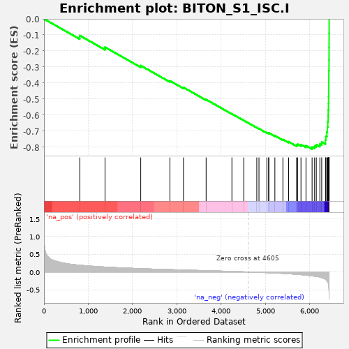
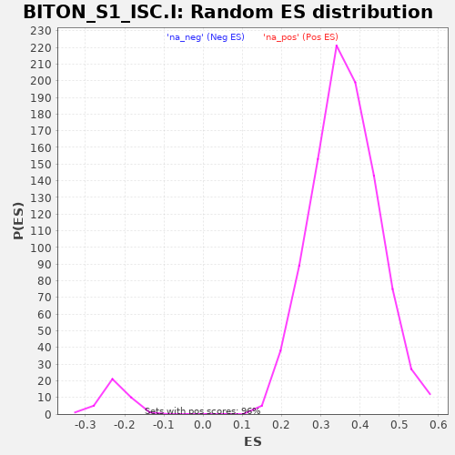

| | | Dataset | al10_v_al5 |
| Phenotype | NoPhenotypeAvailable |
| Upregulated in class | na_neg |
| GeneSet | BITON_S1_ISC.I |
| Enrichment Score (ES) | -0.8118213 |
| Normalized Enrichment Score (NES) | -3.5895271 |
| Nominal p-value | 0.0 |
| FDR q-value | 0.0 |
| FWER p-Value | 0.0 |
Table: GSEA Results Summary

Fig 1: Enrichment plot: BITON_S1_ISC.I
Profile of the Running ES Score & Positions of GeneSet Members on the Rank Ordered List
| PROBE | GENE SYMBOL | GENE_TITLE | RANK IN GENE LIST | RANK METRIC SCORE | RUNNING ES | CORE ENRICHMENT | | 1 | Npc2 | | | 808 | 0.190 | -0.1038 | No |
| 2 | Nsa2 | | | 1378 | 0.139 | -0.1762 | No |
| 3 | Cox7a2l | | | 2184 | 0.093 | -0.2910 | No |
| 4 | Eif4b | | | 2843 | 0.066 | -0.3860 | No |
| 5 | Tspan12 | | | 3149 | 0.055 | -0.4272 | No |
| 6 | Eif3e | | | 3660 | 0.036 | -0.5027 | No |
| 7 | Efna1 | | | 4242 | 0.014 | -0.5918 | No |
| 8 | Sh3rf1 | | | 4509 | 0.004 | -0.6329 | No |
| 9 | Sypl | | | 4804 | -0.009 | -0.6778 | No |
| 10 | Agr3 | | | 4853 | -0.012 | -0.6839 | No |
| 11 | Aqp1 | | | 5031 | -0.021 | -0.7091 | No |
| 12 | Ces1d | | | 5070 | -0.022 | -0.7125 | No |
| 13 | Chp1 | | | 5076 | -0.022 | -0.7106 | No |
| 14 | Tmem171 | | | 5212 | -0.030 | -0.7281 | No |
| 15 | Sord | | | 5393 | -0.040 | -0.7514 | No |
| 16 | Tprkb | | | 5522 | -0.050 | -0.7655 | No |
| 17 | Slc14a1 | | | 5701 | -0.066 | -0.7854 | No |
| 18 | Mtus1 | | | 5726 | -0.068 | -0.7811 | No |
| 19 | Trim2 | | | 5801 | -0.077 | -0.7835 | No |
| 20 | Oat | | | 5914 | -0.089 | -0.7904 | No |
| 21 | Snx10 | | | 6052 | -0.111 | -0.7987 | Yes |
| 22 | Nrn1 | | | 6109 | -0.119 | -0.7933 | Yes |
| 23 | Igbp1 | | | 6147 | -0.126 | -0.7841 | Yes |
| 24 | Lbh | | | 6227 | -0.144 | -0.7794 | Yes |
| 25 | Rgcc | | | 6269 | -0.159 | -0.7670 | Yes |
| 26 | Filip1l | | | 6355 | -0.209 | -0.7555 | Yes |
| 27 | Arhgef26 | | | 6362 | -0.216 | -0.7309 | Yes |
| 28 | Pik3r1 | | | 6386 | -0.246 | -0.7052 | Yes |
| 29 | Arid5b | | | 6398 | -0.271 | -0.6748 | Yes |
| 30 | Ivns1abp | | | 6406 | -0.287 | -0.6419 | Yes |
| 31 | Jun | | | 6415 | -0.309 | -0.6065 | Yes |
| 32 | Soat1 | | | 6417 | -0.324 | -0.5682 | Yes |
| 33 | Slc12a2 | | | 6422 | -0.350 | -0.5272 | Yes |
| 34 | Rnf43 | | | 6424 | -0.368 | -0.4837 | Yes |
| 35 | Olfm4 | | | 6427 | -0.438 | -0.4320 | Yes |
| 36 | Sorbs2 | | | 6428 | -0.443 | -0.3795 | Yes |
| 37 | Lgr5 | | | 6430 | -0.475 | -0.3233 | Yes |
| 38 | Ogt | | | 6434 | -0.571 | -0.2560 | Yes |
| 39 | Fam13a | | | 6435 | -0.647 | -0.1792 | Yes |
| 40 | Kcnq1ot1 | | | 6436 | -0.753 | -0.0899 | Yes |
| 41 | Pdgfa | | | 6437 | -0.757 | -0.0000 | Yes |
Table: GSEA details [plain text format]

Fig 2: BITON_S1_ISC.I: Random ES distribution
Gene set null distribution of ES for BITON_S1_ISC.I